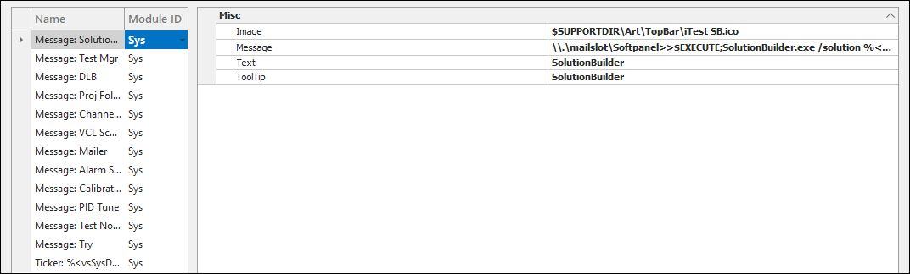
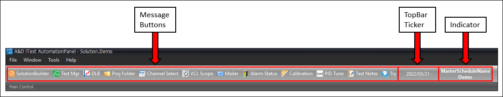

iTest User's Guide
AutomationPanel contains a configurable toolbar at the top of the display, located below the main menu. This TopBar enables you to display items regardless of the arrangement of layouts, panels, or toolbars. These are useful because they can provide shortcuts to perform common tasks, launch often used tools, or provide small informational displays.
The TopBar can display three types of items:
The TopBar editor is divided into two sections: the list of TopBar items and the editing area. This editor can be accessed by selecting Displays > TopBar from SolutionBuilder's main menu.
TopBar Editor

The following right-click options are available:
Right-Click Options
| Option | Description |
| Add | Adds a new message, indicator, or ticker item to the TopBar. For more information, refer to the Adding New TopBar Items section. |
| Remove | Removes the selected TopBar item. |
| Duplicate | Duplicates the selected TopBar item. |
| Cut | Removes the selected TopBar item and copies it to the clipboard. |
| Paste | Pastes the copied TopBar item. |
| Undo | Undoes the last action. |
| Redo | Redoes the last undone action. |
| Show/Hide Module ID | Shows/hides the module ID column. |
To add new TopBar items, right-click in the list of TopBar items, and select Add. You can add a new message, indicator, or ticker item. These items and their properties are detailed in the tables below.
Message Item
| Property | Description |
| Image | The image to display for the message item. |
| Message | The mailslot message to send when this item is clicked in AutomationPanel. For more information about configuring mailslot messages, refer to the MessagesEditor documentation. |
| Text | The label for the message item. |
| ToolTip | The tooltip for the message item. |
Indicator Item
| Property | Description |
| Name | The channel. This channel's name and value is displayed in the TopBar. |
Ticker Item
| Property | Description |
| Name | The ticker message, which can include channel values. This message displays as scrolling text from right to left. Listing just a channel name will result in a ticker message of the channel's value. To include additional text or use multiple channels, the channels must be surrounded by %< >%, e.g., Error = %<voDmo1Error>%. |
| Width | The width of the ticker item. |
The image below is an example of a configured TopBar:
Configured TopBar
